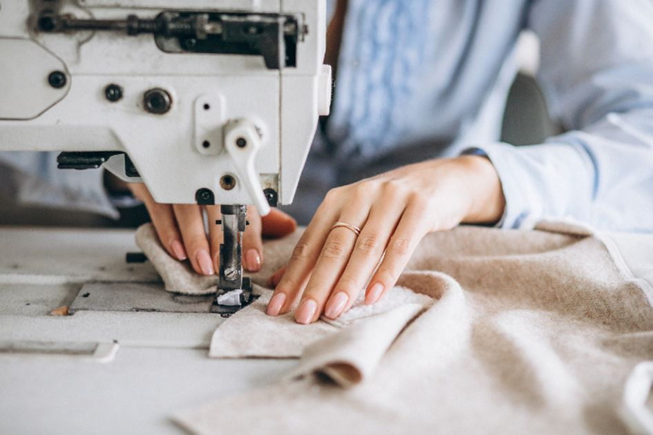

Membeli Bahan kain dan membuat sketsa.
Mengukur dan memotong sesuai ukuran.
Proses sewing.
Quality Control.
Finishing
Description
X
×
aktivitas Menjahit
baca aktivitas tersebut untuk melihat kinerja kami